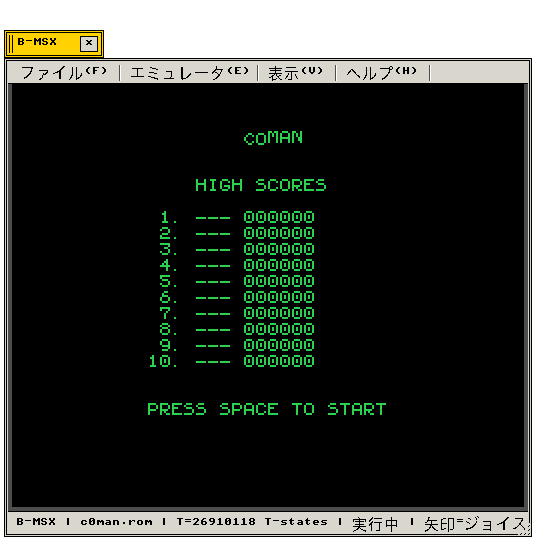

c0man (c0man) ソフトウェア工学要約 — 本タイトルは MSX1 向けに開発された 16 KiB 容量のカートリッジです。マッパーには 16 KiB Flat ROM を採用し、描画モードには Screen 2 (256×192)、音響には PSG (AY-3-8910) を駆使してハードウェア限界性能を追求しています。
"Technical profile for c0man. Engineered on MSX1 with 16 KiB storage using 16 KiB Flat ROM, rendering in Screen 2 (256×192) and voiced by PSG (AY-3-8910)."
01 / Capture
1. 実機描画フレームバッファ (Authentic Frame Preview)
PUBLISH Standard · Unadorned RGBA Framebuffer Extraction
実機描画フレームバッファより抽出された真正な画面です。CSS の人工的な影や角丸を排除し、原本のピクセルアートを忠実に提示します。
"Native pixel frame captured directly from the display framebuffer without artificial CSS alterations, preserving retro resolution."
"Native pixel frame captured directly from the display framebuffer without artificial CSS alterations, preserving retro resolution."

c0man (c0man) — 実行窓フレームバッファ自動抽出 (538 × 543 / RGBA)
02 / Architecture
2. ソフトウェア構造諸元 (Technical Specifications)
ROM Layout · VDP Allocation · Sound Engine
本タイトルのシステム構造およびシリコン制御諸元です。
"Structural parameters defining memory mapper geometry, VDP tile/bitmap allocations, and audio synthesizer channels."
"Structural parameters defining memory mapper geometry, VDP tile/bitmap allocations, and audio synthesizer channels."
| 項目 (Subsystem) | 諸元・仕様 (Functional Specification) | 技術定義 (Technical Definition) |
|---|---|---|
| 対象世代 (Target) | MSX1 | 標準 MSX アーキテクチャ準拠 |
| ROM 容量 / 形式 | 16 KiB (16 KiB Flat ROM) | 16 バイト ROM カートリッジヘッダ ($4000) |
| VDP 画面モード | Screen 2 (256×192) | ハードウェアプレーン制御およびパレット割当 |
| 音源チップ (Audio) | PSG (AY-3-8910) | PSG 3ch 矩形波 / FM 音源音色テーブル |
03 / Mechanics
3. ゲームエンジンと描画論理 (Engine Mechanics)
Algorithms · Collision Detection · State Machines
本タイトルに実装されている主要なゲームエンジンアルゴリズムの解説です。
"Core algorithms powering world updates, collision matrices, rasterization routines, and sprite multiplexing."
"Core algorithms powering world updates, collision matrices, rasterization routines, and sprite multiplexing."
| 機能アルゴリズム (Mechanism) | 実装仕様・動作解説 (Functional Implementation) |
|---|---|
| ゴースト AI | ターゲットタイルの計算アルゴリズム（ブリンキーの直接追跡、ピンキーの前方予測等） |
| 当たり判定 | プレイヤーとゴーストのバウンディングボックス中心点距離による厳密判定 |
| ドット管理 | 迷路全体のクッキー残数をビット配列で管理し、全滅でステージクリア |
| PSG 音響 | ワカワカ走行音およびパワーエサ取得時のアルペジオ音を PSG で再現 |
04 / Links
4. 関連資料とエミュレータ接続 (Related Documentation)
B-System B-MSX Implementation & Emulators